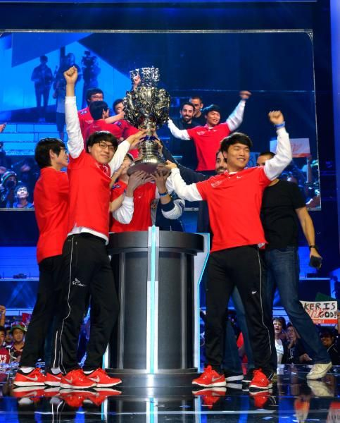

T1, el mejor equipo del mundo
T1 (anteriormente SK Telecom T1 o SKT T1) es un equipo profesional de deportes electrónicos, propiedad de la
compañía surcoreana de telecomunicaciones SK Telecom. La organización cuenta con representación en varios de
los deportes eléctricos más importantes de la actualidad, como lo son League of Legends, Valorant o Apex
Legends, destacando notablemente en el primero.

SKT T1 es uno de los mejores equipos de League of Legends de la historia, que cuenta en su plantilla con
grandes jugadores como Faker, considerado por muchos el mejor jugador de la historia del videojuego. Son los
máximos campeones del Campeonato Mundial de League of Legends, la competición más importante del videojuego,
con tres títulos conquistados en 2013 (como SK Telecom T1 K), 2015, y 2016.

Aunque ya habían ganado su primer título mundial en 2013, su supremacía durante el año 2015 fue
sobresaliente. El equipo ganó dos títulos domésticos en corea, primavera y verano, para acabar de redondear
la temporada haciéndose con su segundo título de campeón del mundo en el Campeonato Mundial de League of
Legends 2015 sin apenas encontrar oposición.

Dejando atrás un 2015 estelar, los múltiples cambios de la alineación de SKT hicieron que el equipo no
tuviera el mejor de los comienzos en 2016. Sin embargo, tras un breve periodo de adaptación, este año se
convertiría en otro de los mejores de su historia. Resultaron campeones invictos del IEM Katowice, se
hicieron con primer puesto en el split de primavera, ganaron el Mid-Season Invitational y se consagraron
como campeones del Campeonato Mundial de League of Legends 2016, después de haber derrotado al conjunto
favorito, ROX Tigers, en la semifinal, en una serie que se considera como una de las mejores de la
historia, y todo en un mismo año.
El 2017 comenzaría bien para el equipo, con dos nuevas incorporaciones en la plantilla SKT se haría con el
split de primavera y ganaría por segundo año consecutivo el MSI. Sin embargo, en verano las cosas se
complicarían y, tras una temporada regular algo atropellada, el equipo solo lograría hacerse con el segundo
puesto, ganando eso sí una plaza para el Campeonato Mundial de League of Legends 2017. No obstante, la
tendencia del conjunto durante el torneo no fue del todo ascendente, ganando partidos al límite, dejando
entrever que no eran el equipo invencible que todos recordaban. Aun así, tras algunas victorias ajustadas,
llegaron a las finales, donde las sospechas se confirmaron, materializándose a través de una aplastante
derrota 0-3 ante el equipo de Samsung Galaxy White en una serie que pasaría a la historia.